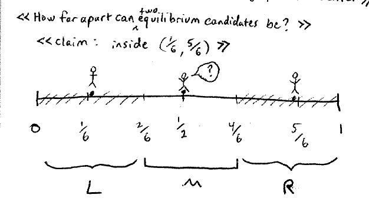

Lecture 7
Bertrand Competition
古诺模型是在产量上竞争，而伯川是在价格上进行竞争。
players: 两家公司
cost: 固定的边际成本c
strategy： 制定价格，为了简化模型，范围在[0, 1]之间。
表示总的产量， 。
产量的计算： 这是两个互为替代品的商品，比如可口可乐或者是百事可乐，只要价格有大小之分，那么就朝一边倒，否则是平分市场分额。
payoffs:
找到玩家1的最佳对策，不进行求导： 垄断是会使得公司收益最大，并且总利润也是最大的。
为什么是这个点，假设初始的点为，当然公司1会改变自己的价格，最终肯定还是会收敛到纳什均衡点。
在纳什均衡点的位置，p=c, profit = 0.
能够得到的结论：
- 即使只有两个公司进行竞争，结果像是完全竞争的结果。
- 即使像古诺模型那样设置，但是策略集合是不同的。
实际上，商品应该是有差别的(differentiated products)。
homework:
linear city model
election
0 1
|---------------------------------------------------------|
选民在数轴上是均匀分布的
玩家：voters
策略：
- 你是否要参加。
- 一旦参加只能投票给最近的人，每一个人都能成为candidate，一旦参与那么不能给自己投票，即不能选择自己的立场
- 大多数选择的candidate成为赢家
payoffs:
- 如果获胜了，那么会得到奖品B
- 代价是C，并且假设B==2C
- 有一个附加成本，如果你的坐标是x，winner 坐标为y，你会付出成本-
e.g.
- x如果赢了, payoffs = B-C
- x参与了，但是y赢了比赛，payoffs =
- x不参与,y赢得了比赛，payoffs =
纳什均衡点分析：
如果参选人是奇数，那么最中间的那个人站起来是纳什均衡点
如果参选人是偶数，那么最中间的两个人站起来是纳什均衡点
分析的本质是任何人对现在的结果都不会后悔，那么就是纳什均衡点。
那么接下来的问题是，对称的两个候选人是可能存在纳什均衡点的，那么这个区间是什么？

只要两边的人站起来后，最中间的那个人不会站起来（图中有？的人），那么就是纳什均衡。
因此只要对称的选举人在，那么就是纳什均衡的。
- 纳什均衡点不一定是唯一的。
- 多一个左派的人参选，那么右派获胜的几率更大。这个其实也代表着美国真实的选举情况，为什么一般最后选举的最多的票是两个人，因为一旦某个党派有两个及以上的人参与选举，那么就会使得对方获胜的概率变得更大。
- 如果太过极端的两个对称的人参与选举（[0, 1/6], [5/6, 1]），那么中间的人会参与选举。
- 在这个模型中，先对结论进行猜测，然后进行验证，看是否有人后悔来验证是一件很好的事情。